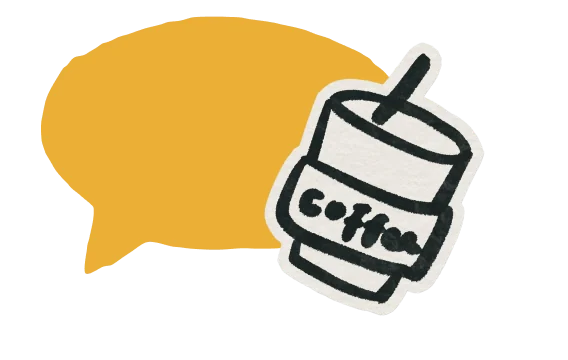
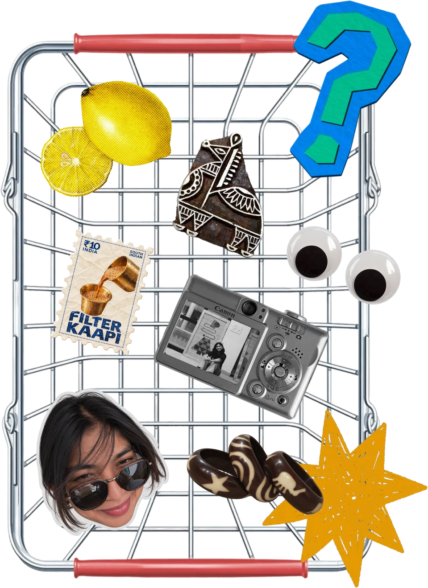
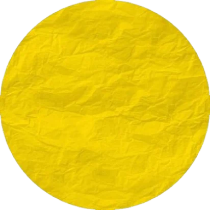

- Curious
- Observant
- Thoughtful
- Experimental

SHARVANI
Interaction Designer
An interaction designer exploring the
intersection of human behaviour, technology, and meaningful experiences.


I connect the dots, question the obvious,
and look for meaning in the things we often take for granted.
Sometimes, a little observation reveals a problem worth solving.
Sometimes, it sparks an idea worth exploring.
Selected Works

A collection of questions
I turned into experiences.
About me

Hey, I’m Sharvani .
A molecular biologist turned designer from Mysuru, curious about how the
world works and what makes people tick.
I collect little pieces of the world wherever I go.
Stories, people, places, behaviours, questions, and the
tiny details that are easy to miss.
That's where design comes in.
I'm interested in the space between people and technology, making things easier to navigate, more engaging to interact , and more thoughtful to experience.
- Still collecting
- Still curious
- Always making .
My Design Approach *
What sets me apart *
-

Understand the people. - Unpack the problem.
- Shape the experience.
I connect scattered insights to design products with clarity and direction.